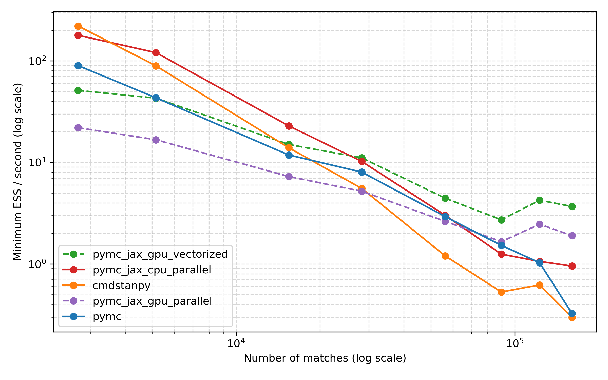
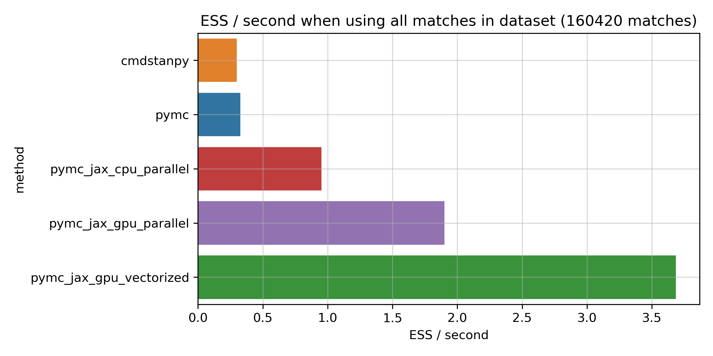
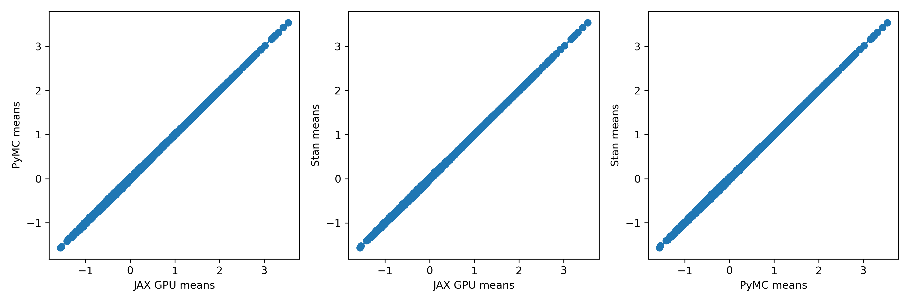
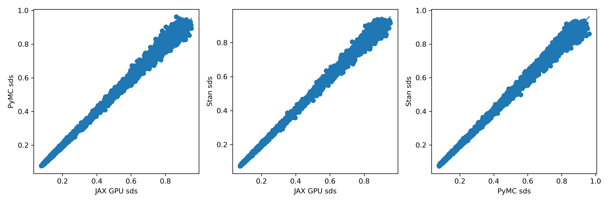

MCMC for big datasets: faster sampling with JAX and the GPU
Scaling PyMC using JAX to sample on the GPU
This post was written by Martin Ingram, with help from Thomas Wiecki and the PyMC team. You can find the original version on his blog.
You'll often hear people say that MCMC is too slow for big datasets. For the very biggest datasets with millions of observations, there may be some truth to that. But the developers of PyMC and Stan are constantly refining their samplers, and it's now possible to fit models to much bigger datasets than you might think.
In particular, since the PyMC developers introduced it a bit over a year ago, I've been really excited about PyMC's JAX support. I've been a fan of JAX for years and think that it's a great platform for Bayesian modelling. What's so intriguing about JAX is that it allows the use of both JIT compilation and GPUs, which can both accelerate model fitting. Currently, PyMC uses numpyro's NUTS sampler to do sampling with JAX. I'm more familiar with PyMC and Stan, so that's what I'll focus on here, but numpyro is also an interesting project in its own right, and I urge you to check it out.
But how much faster is MCMC with JAX, and with a GPU? This blog post explores this question on a single example. It's limited, of course -- maybe other models will see more or less of a gain -- and, although I did my best to write code efficiently, things could probably be optimised further. Still, I hope you'll agree that there are some interesting results.
The model
As people who follow my blog will know, I like to apply Bayesian modelling to tennis, so I'll do that in this blog post, too. What we're going to try to do is to rank tennis players across the entire Open Era, that is, from 1968 until now. That's a pretty big dataset: it's 160,420 matches in total. So not quite in the millions, but still quite sizable.
The model I'll use is called a Bradley-Terry model. The idea in a Bradley-Terry model is that each player has a latent skill $\theta$. When players $i$ and $j$ play each other, player $i$ wins with probability:
$$ p(\text{i wins} | \theta_i, \theta_j) = \text{logit}^{-1}(\theta_i - \theta_j) $$
Say, for example, player $i$ has skill $1$ and player $j$ has skill $-1$. Then player $i$ beats player $j$ with probability $\text{logit}^{-1}(2) \approx 88.1\%$.
We could fit this model with some reasonable prior on the components of $\theta$, maybe $\mathcal{N}(0, 1)$. This would mean that we expect, before seeing the data, that players' skills are about 95% likely to fall between -2 and 2 on the logit scale. That's probably not a bad guess, but it's a bit arbitrary. Couldn't the range also be between -0.8 and 0.8, say? To get around this arbitrariness, we can fit a hierarchical model.
How do we make this a hierarchical model? Well, we can put a prior on the $\theta$s:
$$ \theta_i \stackrel{iid}{\sim} \mathcal{N}(0, \sigma^2) $$
We should also put a hyperprior on $\sigma$:
$$ \sigma \sim \mathcal{N}^{+}(1) $$
The notation here means that we are putting a half-normal prior distribution on $\sigma$ with a scale parameter of 1. The guess of $\sigma = 1$ we talked about earlier would be quite plausible under this model, but we are also not ruling out smaller or larger values, making the model more reasonable.
Translating to PyMC
This model looks as follows in PyMC:
with pm.Model() as model: player_sd = pm.HalfNormal("player_sd", sigma=1.0) player_skills_raw = pm.Normal( "player_skills_raw", 0.0, sigma=1.0, shape=(n_players,) ) player_skills = pm.Deterministic("player_skills", player_skills_raw * player_sd) logit_skills = player_skills[winner_ids] - player_skills[loser_ids] lik = pm.Bernoulli( "win_lik", logit_p=logit_skills, observed=np.ones(winner_ids.shape[0]) )
Pretty short, right!
In Stan, the same model looks like this:
data { int n_matches; int n_players; int winner_ids[n_matches]; int loser_ids[n_matches]; } parameters { vector[n_players] player_skills_raw; real<lower=0> player_sd; } transformed parameters { vector[n_players] player_skills; player_skills = player_skills_raw * player_sd; } model { vector[n_matches] mu; player_skills_raw ~ std_normal(); player_sd ~ normal(0, 1); // As suggested by Bob Carpenter, do not vectorise. for (n in 1:n_matches) { mu[n] = player_skills[winner_ids[n]] - player_skills[loser_ids[n]]; } 1 ~ bernoulli_logit(mu); }
Also pretty short. Note that for both these models, I'm using the non-centred parameterisation (see e.g. here and here) to try to make sampling as efficient as possible. In the PyMC model, I avoid a for loop by vectorising. I initially did this in Stan too, but Stan developer Bob Carpenter mentioned that actually, the for loop is likely to be more efficient in this case. If you're interested in the vectorised version, it's available here.
Benchmark setting
I compare the following approaches, with the following shorthands:
pymc: I used the latest version of PyMC, which is version v4, currently under development.pymc_jax_cpu_parallel: PyMC with JAX backend (numpyro sampler) and the CPU.pymc_jax_gpu_parallel: PyMC with JAX backend (numpyro sampler) and GPU, running chains in sequencepymc_jax_gpu_vectorized: PyMC with JAX backend (numpyro sampler) and GPU, running chains in parallelcmdstanpy: I used cmdstanpy version 1.0.0 to fit the model in Stan, installed viaconda. I initially used PyStan, but it turns out cmdstanpy is now the preferred frontend for Stan in Python. It was easy to use, and I can recommend it.
To see how the runtime changes with different amounts of data, I choose different start years for the fits: 2020, 2019, 2015, 2010, 2000, 1990, 1980, and finally 1968.
For each method, I'll be running 1000 warm-up steps and 1000 samples per chain, for a total of four chains.
I'm running these comparisons on my laptop, a Razer Blade Advanced 15 from 2019 with an Intel i7 9750H, 16GB of RAM, an NVIDIA RTX 2070, running Ubuntu.
Results: wall time

This plot is pretty interesting, I think. Let's only look at the three CPU methods first: the solid orange, blue and red lines. The first thing to see is that Stan and PyMC are pretty similar for the most part, with Stan a bit faster for smaller models, but taking somewhat longer for the largest ones. It seems that both approaches make good use of the CPU. PyMC with the JAX backend, shown in red, is somewhat faster on most datasets, but not hugely so, and for the largest datasets, PyMC and PyMC + JAX (CPU) are pretty similar.
Now let's take a look at the GPU methods, in the dashed purple and green lines. First off, the vectorized approach which runs all chains at the same time on one GPU is somewhat faster than the parallel approach which runs them in sequence. This was my motivation to submit a tiny pull request to support it in PyMC. Both curves are quite flat: unlike the CPU approaches, the GPU runs don't slow down a great deal with more data. For small datasets, the GPU approach seems to incur an additional overhead. But once the number of matches exceeds about 50,000, the GPU really seems to shine. The log scale on the y axis might hide the fact that the differences are actually pretty significant for the full dataset. Here's a bar chart for just the biggest dataset:
The fastest GPU method takes just 2.7 minutes, while PyMC takes about 12 minutes, and Stan takes a bit over 20 minutes. I'd say that all of these timings are pretty great given how many matches are in this dataset. But the speedup of the GPU method is considerable: it's at least 4x vs the fastest CPU-based method, which is JAX on the CPU. I don't know about you, but when I develop models, I much prefer a fitting time of 2.7 minutes to one of 20 minutes -- the fast feedback can be really valuable. Before you conclude that Stan is slow though, please keep in mind the caveats of this comparison: it's only one model, Stan is not making use of the GPU, and benchmarks are hard. Also, just looking at runtime on its own can be a bit misleading, as we'll see next.
Comparing effective sample size per second
How can runtime be misleading? Well, what's more important is effective sample size per second. It could be that in the plot above, Stan is running for longer, but it's also producing more effective samples. And similarly, maybe PyMC's sampler is more efficient than the numpyro JAX sampler. So how do the methods stack up on this metric?
To take a look, I used the excellent arviz tool to compute the effective sample size for each run, and then picked the minimum ESS for any parameter. This is a situation where arviz really shines, I think, because it makes it easy to compute ESS the same way for all of these methods. Here are the results:

Overall, I think this plot presents a similar picture, with the CPU methods being more efficient for smaller datasets, but the GPU ones coming into their own for the largest datasets. Comparing PyMC and Stan, Stan starts out strong and is a bit worse than PyMC for some of the larger datasets, but things are dead even again for the largest dataset.
As before, here is a bar chart for the full dataset:

More ESS per second are better here. You can see that Stan does indeed seem to sample quite efficiently, and is very close to PyMC on this metric. Running JAX on the CPU does seem to be more efficient than both, giving about a 2.9x boost on this metric. The big improvements come from the GPU, though: the fastest GPU method is about 11x more efficient compared to PyMC and Stan, and about 4x compared to JAX on the CPU. So, if anything, the improvement for the JAX numpyro methods is actually bigger here, and the numpyro sampler looks really efficient.
Do they agree?
Some of these methods are a bit experimental, so I thought it would be good to check that the results actually agree with each other. A fast result that's wrong isn't worth much, after all! To do that, I took a look at the player means against each other. Here's what that looks like:

To me, these look extremely similar. How about the standard deviations?

There's a little more scatter here, but I'm almost certain it's just due to sampling variation. If anyone doubts that, let me know; it should be easy enough to test by plotting two independent runs from the same method against each other.
Summary
I think these results are pretty interesting. Some short takeaways for me, in bullet point form:
- For this (admittedly simple) model, the GPU seems really beneficial and leads to a speedup of at least around 4x in ESS / second for the biggest model.
- Among the CPU methods, PyMC and Stan are similarly efficient, and using JAX gives an additional boost of about 2-3x in terms of ESS / second.
- All methods produce similar estimates.
Once again though, I'd like to emphasise that this is just a single model and may only be part of the story. It's possible, for example, that it's particularly well suited to the GPU, and gains for other models could be smaller. But I'm definitely excited about these speedups, and I think they could really help to make MCMC even more popular.
Some things I'd like to try / think about:
- PyMC + JAX uses double precision on GPUs. It's known that float precision is much more efficient on most GPUs, especially on consumer ones like my RTX 2070. Spec sheets list it at 233 GFLOPS for double precision, but 7.465 TFLOPS for single precision -- that's a factor of 32x if I get my maths right! So it's likely that there would be another, possibly large, speedup here. However, I'm a little wary about trying it because I'm concerned about numerical issues with the lower precision. This will be interesting to explore.
- blackjax is a really cool alternative to the
numpyrosampler I used here. If I understood it right, the idea behind it is to decouple the development of model definition frameworks like PyMC and numpyro from that of the MCMC sampler itself, which makes a lot of sense.blackjaxnow has a NUTS sampler, and it would be interesting to compare it with the results above. - More complicated models: It would be interesting to see what happens when surface effects are added, or I fit a dynamic model.
- As I mention later on, I'm currently on an older CUDA version (10.1), so I couldn't use the latest version of JAX. Maybe newer CUDA and JAX would give even better speed.
- GPU support in Stan: it would be interesting to give Stan's OpenCL support a go, too.
I hope you enjoyed this blog post. If you have any questions or comments, let me know by email or on Twitter. I'd like to thank Thomas Wiecki for suggesting this comparison, and for many valuable comments and suggestions from him, as well as from Aki Vehtari, Bob Carpenter, and the PyMC team!
Addendum 1: Tennis player skill estimates
What skills does the model actually estimate? Well, here they are:
| Player name | Skill mean | Skill SD |
|---|---|---|
| Novak Djokovic | 3.54 | 0.09 |
| Rafael Nadal | 3.43 | 0.09 |
| Roger Federer | 3.31 | 0.08 |
| Bjorn Borg | 3.25 | 0.1 |
| Ivan Lendl | 3.23 | 0.08 |
| John McEnroe | 3.18 | 0.09 |
| Jimmy Connors | 3.16 | 0.08 |
| Rod Laver | 3.01 | 0.11 |
| Andy Murray | 2.92 | 0.1 |
| Pete Sampras | 2.92 | 0.09 |
| Boris Becker | 2.83 | 0.09 |
| Andre Agassi | 2.77 | 0.08 |
| Stefan Edberg | 2.73 | 0.08 |
| Andy Roddick | 2.7 | 0.09 |
| Juan Martin del Potro | 2.68 | 0.11 |
| Arthur Ashe | 2.65 | 0.09 |
| Ken Rosewall | 2.62 | 0.1 |
| Guillermo Vilas | 2.59 | 0.08 |
| John Newcombe | 2.53 | 0.1 |
| Mats Wilander | 2.44 | 0.09 |
The "Big 3" top the chart, followed by Borg, Lendl, McEnroe, Connors and Laver. A debatable list for sure, but also not a completely crazy one, I would say.
Addendum 2: PyMC setup
Because PyMC v4 and the JAX backend are still pretty new, the setup involves a few steps. Here's what worked for me:
- Install PyMC v4 following these instructions: https://github.com/pymc-devs/pymc/wiki/Installation-Guide-(Linux)#pymc-v4-installation
- Downgrade
aepplto version 0.0.17 (see here) usingpip install aeppl==0.017. - Install
numpyroby usingpip install numpyro. I used v0.8.0. - Install
JAXfollowing the instructions. Note that I personally used an older version of JAX because I am still on CUDA 10.1, but newer versions should work. I used JAX v0.2.13 and jaxlib v0.1.65.
Addendum 3: Code to reproduce these results
Code to run these experiments is available here: https://github.com/martiningram/mcmc_runtime_comparison.
Work with PyMC Labs
If you are interested in seeing what we at PyMC Labs can do for you, then please email info@pymc-labs.io. We work with companies at a variety of scales and with varying levels of existing modeling capacity. We also run corporate workshop training events and can provide sessions ranging from introduction to Bayes to more advanced topics.